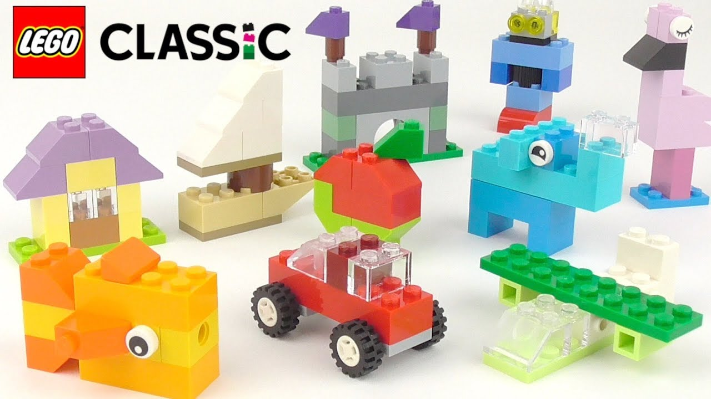
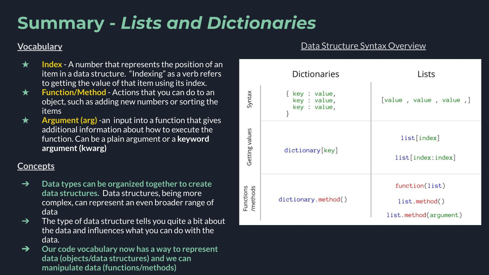

1.2 Lists and Dictionaries#
{kind=link}
Context: from data types to data structures#
Data types are the first level of building blocks in code. Using data types we can build increasingly more complex objects which we call data structures. Data structures are made up of groups of data types, organized differently depending on the strucutre. Today we are going to look at two data structures: Lists and Dictionaries.
The data structures of lists and dictionaries are one step more complicated ways to organize data. This means we are expanding the type of data that we can represent.

🚥 Lists#
Lists are a data structure which represent a group of values. Their syntax is square brackets [] with a comma in between each item.
# List of pollutants
['co', 'co2', 'no2', 'o3']
['co', 'co2', 'no2', 'o3']
We can see how data structures are made of data types in the previous example. Here we have a list of strings
list = [str, str, str, str]
The next example is a list of floats
# List of pH values
[4.5, 1.0, 4.3, 4.3, 7.6]
[4.5, 1.0, 4.3, 4.3, 7.6]
Lists can be any data type, or a mix of data types. You can assign a list as a variable the same way as we did for strings and integers, with an equal sign.
list1 = ["apple", "banana", "cherry"]
list2 = [1, 5, 7, 9, 3]
list3 = [True, False, False]
list4 = ["abc", 34, True, 40, "male"]
pollutants = ['co', 'co2', 'no2', 'o3']
List Indexes#
You access individual items in a list using an index. An index is a number which represents the position of an item in the list.
colors = ['red', 'green', 'blue', 'yellow', 'white', 'black']
A conceptual image of the colors list

Image from Railsware
The syntax for indexing uses the index number and square brackets [].
# Which pollutant is at position 1 in the `pollutants` list?
colors[1]
'green'
Vocabulary
Index: A number that represents the position of an item in a data structure. “Indexing” as a verb refers to getting the value of that item using its index.
🌟Key Clarification#
In Python (and most programming langauges) you begin counting with indexes at 0 instead of at 1. So pollutants[1] did not return the first item in the list, it returned the second. You access the first item in the list using pollutants[0].
This concept of starting counting at 0 instead of 1 is true across the whole Python language.
More ways to index#
To access several values consecutively you use a colon :.
colors[1:3]
['green', 'blue']
The general syntax is:
list[start:end+1]
The fact that you need end+1 can feel a little off. The benefit of this approach is that subtractding your start from your end gives the number of items that should be returned. So in the example above, 3-1 = 2 and 2 items were returned from the list.
We only sampled a few of the ways to index lists here. If you want to read about more check out this article from Railsware.
👀 Noticing patterns#
This sytnax for indexing - [number] or [number:number]- is really common in the Python language. It works on many types of data structures, so keep your eyes open for the pattern!
📝 Check your understanding
Use the following list to answer the questions:
pollutants = ['co', 'co2', 'no2', 'o3']
What would be the result of
pollutants[2]?
a) an error
b) co
c) co2
d) no2
e) o3
What is the index you should use to find the value of the last item in the
pollutantslist?
a) 0
b) 1
c) 2
d) 3
e) 4
🏋🏽 Doing things to lists: Functions/Methods#
If data structures are like nouns in the english language then methods or functions are the verbs. Thus far we have created lots of variables of many different types. Functions or methods will now enable us to do things to them.
For example, when working with a list, you might want to:
know how many things are in your list
add a new item to a list
delete an item from a list
On a vocabulary note, for now you can consider methods and functions to be the same thing.
Getting the length#
One very common question you might ask about a list is “How many things are in my list?”. You answer this question using a function called len(), with is short for “length”. This gives the number of items in the list.
# Finding the number of items in a list
len(pollutants)
4
The len() function is a good example of one of the two typical syntaxes of a function – the name of the function, len, followed by regular parenthesis () with your object (in this case the list) inside the parenthesis.
Vocabulary
Function/Method: Actions that you use to manipulate or inspect an object, such as adding new numbers or sorting items
Adding a new value#
A different thing you might want to do to your list is add a new item. The syntax for this is .append().
# Starting list
print(pollutants)
['co', 'co2', 'no2', 'o3']
# Appending methane
pollutants.append('ch4')
# Updated list
print(pollutants)
['co', 'co2', 'no2', 'o3', 'ch4']
When using .append() we had to tell the method what the value was that we wanted to append, in this case ch4. ch4 is called an argument, which is an input into your function/method.
.append() is an example of the other common syntax – your object (ex. the list), a period ., the function name (ex. append), open parenthesis (). If the method needs inputs(arguments) (Ex. ch4 in the append example) they go inside the parenthesis.
There are lots of methods that you can use on lists. 10 of them are described pretty nicely in this article.
Vocabulary
Argument (arg 🏴☠️): An input into a function that gives additional information about how to execute the function. Can be a plain argument or a keyword argument (kwarg)
Changing (updating) a value#
Another thing you might want to take is changing the value of an item. This is so common you don’t need to use a .verb()-type function for this. You just use the same [] notation we used for indexing and an equals sign to update the value.
# Original value of the 3rd item in `pollutants`
pollutants
['co', 'co2', 'no2', 'o3', 'ch4']
# Changing the value
pollutants[2] = 'ch4'
# Notice the value in the 3rd position (index 2) has changed.
pollutants
['co', 'co2', 'ch4', 'o3', 'ch4']
📝 Check your understanding
Start with the following line of code:
pollutants = ['co', 'co2', 'no2', 'o3']
Write a new line of code to add the value ‘nox’ to our
pollutantslist.Write a line of code to change the value ‘no2’ to ‘bc’.
🔥 Extend your understanding
This article linked in the lecture describes a few common list methods. Scroll down to where the article talks about sort() and use that method on our pollutants list. For an extra challenge, sort the list in reverse alphabetically.
💡 Key Ideas
Lists are a data type that hold a group of values. They are defined with square brackets
[]with commas in between values.Indexes are ways to access items in your list using the position of the value in the list as a number.
In python we start counting from 0, not from 1 with indexes.
Functions/methods (think of those two as the same thing right now) are actions you can take that let you ask a question about an object or change it somehow. The two we looked at today are
len()and.append(), which demonstrate the two common types of syntax.
📕 Dictionaries#
Dictionaries are another data structure. They are similar to lists in that they represent a group of things, but with dictionaries each value is given a name, called a key.

We see in the image that dictionary items have two parts - the key and the value. Each item in the dictionary, called a key-value pair, is seperated by a comma.
This concept is similar to a book dictionary, with words and definitions. In that case the words are the keys and the definitions are the values.
The dictionary represented conceptually above would be coded like this in Python:
{
'name': 'Dyamond',
'age': 25,
'job': 'Dev',
'city': 'New York',
'email': 'dyamond@web.com',
}
{'name': 'Dyamond',
'age': 25,
'job': 'Dev',
'city': 'New York',
'email': 'dyamond@web.com'}
The key comes before the colon and the value comes after. So the general syntax of a dictionary would be:
{key1: value1,
key2: value2,
key3: value3}
The values in the dictionary can be any of the types of data types we know so far – strings, numbers, booleans, lists, or even another dictionary. The keys can be strings, numbers, or booleans, but not lists.
side note: you don’t have to leave the spaces between lines like I did. You can define a dictionary all in one line. I just used multiple because I think it is easier to read.
{'name': 'Dyamond', 'age': 25, 'job': 'Dev', 'city': 'New York', 'email': 'dyamond@web.com',}
{'name': 'Dyamond',
'age': 25,
'job': 'Dev',
'city': 'New York',
'email': 'dyamond@web.com'}
As you may be noticing the trend, we can assign dictionaries as variables:
human = {'name': 'Dyamond', 'age': 25, 'job': 'Dev', 'city': 'New York', 'email': 'dyamond@web.com',}
📝 Check your understanding
How many keys are in the following dictionary? What are they?
{
'CO': 'Colorado',
'AZ': 'Arizona',
'WI': 'Wisconsin',
}
a) 3 keys: Colorado, Arizona, Wisconsin
b) 3 keys: CO, AZ, WI
c) 2 keys: CO, Colorado
d) 2 keys: AZ, Arizona
e) 2 keys: WI, Wisconsin
📝 Check your understanding
Write a dictionary that represents the english to spanish translation of the following words: table -> mesa, city -> ciudad, sky -> cielo
💡 Key Ideas
Dictionaries are a data structure that represent a group of values that have names, or keys. This is similar to a book dictionary, where you have words (keys) and definitions (values).
Each item in a dictionary is called a key-value pair
Inspecting in a dictionary#
You can view a particular value of a dictionary using its key and square brackets [].
metadata = {
'location': 'Nairobi',
'quality_flag': 5,
'zenith': 60,
'clouds': True,
'data_center': ['LPDAAC', 'ASDC'],
}
metadata['location']
'Nairobi'
If instead of a single value you want to view all either all of the keys or all of the values, you use .keys() and .values(), respectively.
metadata.keys()
dict_keys(['location', 'quality_flag', 'zenith', 'clouds', 'data_center'])
metadata.values()
dict_values(['Nairobi', 5, 60, True, ['LPDAAC', 'ASDC']])
Changing and adding dictionary items#
You change or add a new dictionary item with the same [] syntax you use to access the item’s value and a = (just like with a list).
print('value before', metadata['zenith'])
value before 60
metadata['zenith'] = 30
print('value after', metadata['zenith'])
value after 30
This syntax works whether or not the dictionary key exists already or not. So in the previous code block we updated the value of the key zenith. We can use the same code, though, with a new key value to add a new key.
print('value before:', metadata['agency'])
---------------------------------------------------------------------------
KeyError Traceback (most recent call last)
Cell In[25], line 1
----> 1 print('value before:', metadata['agency'])
KeyError: 'agency'
metadata['agency'] = 'NASA'
print('value after:', metadata['agency'])
value after: NASA
📝 Check your understanding
metadata = {
'location': 'Nairobi',
'quality_flag': 5,
'zenith': 60,
'clouds': True,
'data_center': ['LPDAAC', 'ASDC'],
}
Add a new value to the
metadatadictionary calledsatellite_nameand pick your own glorious satellite name to assign.Overwrite the
satellite_namefield you just created with a new name.
💡 Key Ideas
Access values in a dictionary using their key and square brackets
[](Ex.metadata['location'])Using the square bracket notation and then an equals sign will either add a new key-value pair to the dictionary, or overwrite the old one if the key already exists.
📝 Closing Thought#
Lists and Dictionaries are data structures. Data structures are really influential when working with data because the structure that your data is stored in greatly expands or restricts how you work with the data. Most datasets do not fit into every type of data structure so choosing an appropriate data structure is an important part of coding.
📝 Check your understanding
Take 1 minute and write out a few of the similarities and differences between lists and dictionaries. Consider both how they differ in how they store data as well as the actions (functions) that may exist for the two data structures.
📝 Check your understanding
Which type of object - a list or a dictionary - do you think would be the most appropriate data structure for an object that represents the data below?
Daily weather station measurements for 5 stations (temperature, wind speed, and a written description of conditions)
Student grades in a class
Populations of Latin American countries